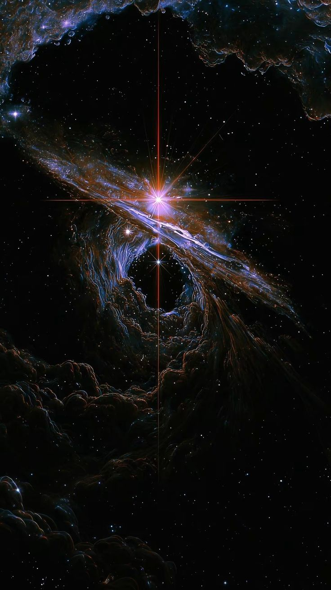
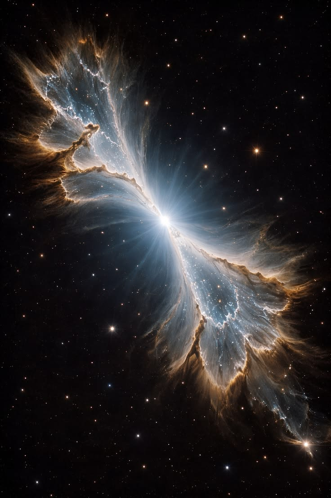
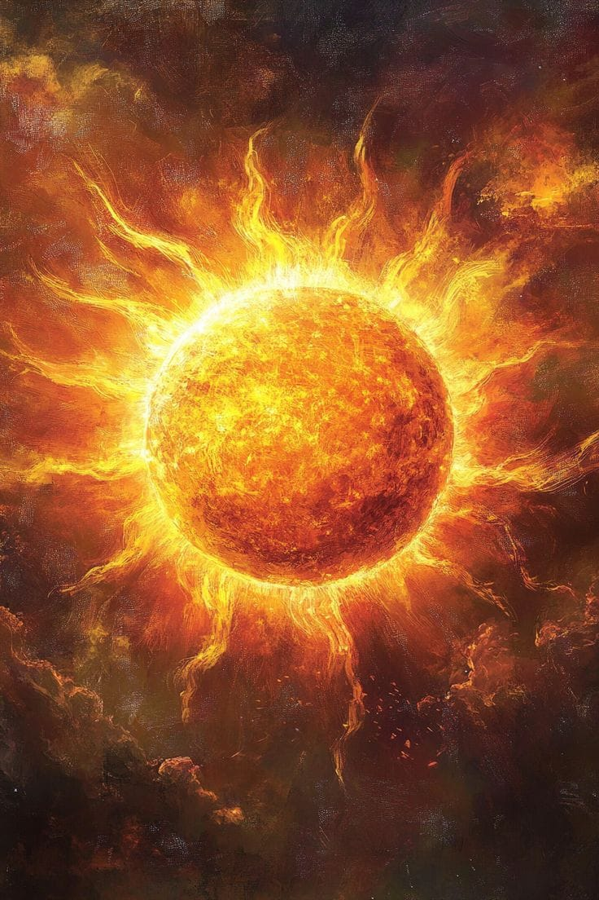

✨ Descubre los secretos del universo
El universo es inmenso y está formado por galaxias, estrellas, planetas, nebulosas y muchos otros objetos. Los científicos lo estudian para conocer su origen y comprender cómo funciona.

⭐ Las estrellas
Las estrellas son enormes esferas de gas muy caliente que producen luz y energía. El Sol es la estrella más cercana a la Tierra y es fundamental para la vida en nuestro planeta. Las estrellas pueden tener diferentes tamaños, temperaturas y colores.
🌌 Las galaxias
Las galaxias son enormes conjuntos de estrellas, planetas, gas, polvo y materia oscura unidos por la gravedad. Nuestra galaxia se llama Vía Láctea y contiene miles de millones de estrellas. Existen galaxias espirales, elípticas e irregulares.

☁️ Las nebulosas
Las nebulosas son grandes nubes de gas y polvo que se encuentran en el espacio. Algunas son lugares donde nacen nuevas estrellas, mientras que otras se forman cuando las estrellas llegan al final de su vida. Sus diferentes gases pueden producir colores impresionantes.
🕳️ Los agujeros negros
Son regiones del espacio donde la gravedad es tan intensa que nada puede escapar una vez que cruza su horizonte de sucesos, ni siquiera la luz. Algunos se forman cuando estrellas muy masivas colapsan. Los científicos los estudian mediante sus efectos sobre la materia que los rodea.
🔭 Los telescopios
Los telescopios son instrumentos que permiten observar objetos celestes muy lejanos. Algunos utilizan luz visible, mientras que otros detectan ondas de radio, rayos X o radiación infrarroja. Gracias a ellos conocemos mejor los planetas, las estrellas y las galaxias.
🎨 Los colores del universo
Los colores de las imágenes espaciales pueden mostrar información sobre la temperatura, la composición química y la energía de los objetos. Algunas fotografías científicas utilizan colores asignados para representar radiaciones que nuestros ojos no pueden ver directamente.

🔭 Descubrimientos y elementos del universo
| Elemento | Característica | ¿Qué es? |
|---|---|---|
| El Sol | Estrella más cercana | Es una enorme esfera de gas caliente que produce luz y energía. |
| Vía Láctea | Galaxia espiral | Es la galaxia donde se encuentra nuestro sistema solar. |
| Nebulosas | Gas y polvo espacial | Son nubes espaciales donde pueden formarse nuevas estrellas. |
| Agujeros negros | Gravedad muy intensa | Son regiones del espacio de las que ni siquiera la luz puede escapar. |
| Telescopios | Instrumentos de observación | Permiten estudiar planetas, estrellas y galaxias lejanas. |